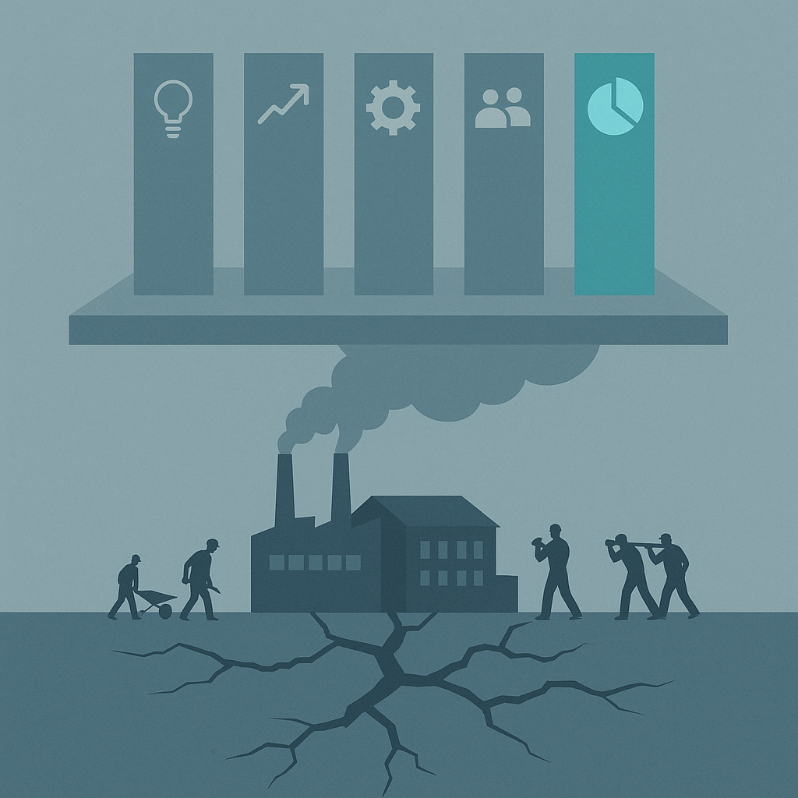
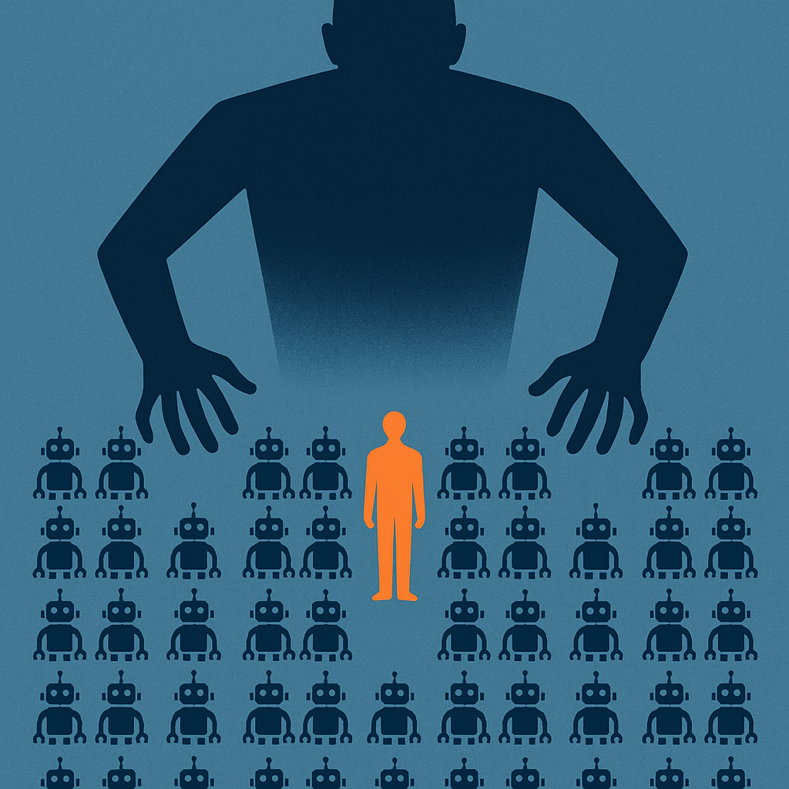

麦肯锡到底说了什么
先复述一下原文，不然容易被人觉得我在断章取义。
报告标题：《The Agentic Organization: Contours of the Next Paradigm for the AI Era》，麦肯锡 People & Organizational Performance 部门出品。
核心论点是——
AI 正在带来工业革命和数字革命以来最大的组织范式转移。
新范式叫 agentic organization：人类和 AI agent（虚拟的 + 物理的）在近乎零边际成本下并肩工作。
麦肯锡给这个新组织搭了五根柱子：
| 支柱 | 翻译成人话 |
|---|---|
| Business model | 你卖的是什么变了 |
| Operating model | 你怎么干活变了 |
| Governance | 谁说了算变了 |
| Workforce, people, culture | 你雇谁、怎么管、文化怎么塑变了 |
| Technology & data | 底层技术栈变了 |
然后给了几个具体的"未来形态"描述——
未来形态一：agentic team（智能体团队）
未来的组织结构会变成小型、结果导向的"智能体团队"。一个 2-5 人的多学科人类小队，可以监督一座"agent factory"——50 到 100 个专业 AI agent，跑一整套端到端流程。
未来形态二：performance management 变形
绩效考核不再看你完成了多少任务，而是看你有多会编排 agent、释放价值、交付结果。
未来形态三：人才系统重写
职业路径、激励机制、领导力模型，全部要重新设计。
听起来很美。
兄弟们这套描述熟悉吗？
熟悉。这是麦肯锡过去 30 年发过的所有"下一代组织"报告的标准模板。
只是这次主角从 BPR、敏捷、数字化、平台化，换成了 agent。

真正炸裂的不是新概念，是 89-9-1 这三个数字
报告里有一组数据被很多读者忽略了。我把它单拎出来——
89% 的组织还停留在工业时代。
9% 是数字时代的"敏捷/产品平台"模式。
只有 1% 是去中心化网络。
这三个数字才是整篇报告的真正暴击。
为什么？因为它们彻底打脸了过去 30 年所有的"数字化转型"叙事。
我们听了多少年"中台战略"、"敏捷转型"、"产品平台化"、"data-driven"、"组织变革"——
最后的结果是：全球只有 9% 的公司勉强算"数字时代"。
也就是说，过去 30 年，全世界 91% 的公司在"转型"上花的钱，转出了一个寂寞。
兄弟们想清楚——
90% 的"转型"投入，本质上是给咨询公司、给软件供应商、给中层管理者提供叙事素材。
不是真的在变。
是在演变。
那现在麦肯锡说 "agentic organization 是下一个范式"——
凭什么相信这次能跑出 10%？
凭什么相信它不会变成下一份占据 91% 公司 PPT 的"演变"？
我个人感觉，它跑不出来。
它会变成 99% 公司的话术，1% 公司的实战。
而且更骚的是——这 1% 大概率不是听了麦肯锡才变的。这 1% 是已经变了，麦肯锡才能写报告。
报告永远是事后归纳。不是事前指南。
Agent Factory 这件事，可能没那么浪漫
报告里有个具体的形态描述——
"2 到 5 个人，监督 50 到 100 个 AI agent。"
听起来很科幻，对吧？
兄弟们仔细想想——
这玩意儿其实就是个新版的中层管理结构。
你以为你升级了？
你只是从"管 5 个下属"变成了"管 50 个 agent"。
KPI 没变（按 agent 产出算）。汇报关系没变（你向 leader 汇报，agent 向你汇报）。返工没变（agent 输出错了你要兜底）。压力没变（甚至更大，因为 agent 不会请假）。
更恐怖的是——
agent 不会跳槽、不会维权、不会写《置身钉内》。
这意味着 agent factory 模式下，"老板对中层的剥削上限"被打开了。
以前一个中层管 10 个人，要顾及流失率、要团建、要做职业规划。现在管 100 个 agent，纯粹的工具关系，没有任何人性约束。
理论上麦肯锡说的是"人类小队监督 agent factory"——人是核心，agent 是工具。
但实操上，绝大部分公司会演变成——
人也变成 agent factory 里的一个 supervisor agent。
你被一个更高阶的 manager（可能是真人，可能是更高级的 orchestrator agent）监督。
你的工作不是"做事"，是"让 agent 出活"。
你的价值不是"创造"，是"调度"。
这是升级，还是异化？
我个人感觉，取决于谁来设计这套系统。
如果是被「权力美学」浸泡过的中层来设计——这是异化。
如果是真的有 product mindset 的人来设计——这才可能是升级。
但你公司更可能是哪种？
兄弟们答案你自己心里清楚。

麦肯锡话术的真实用途
聊聊咨询报告这件事本身。
我没有要黑麦肯锡的意思。这份报告的 framework 是认真的，里面的数据也都有出处。
但兄弟们想清楚一件事——
麦肯锡报告的真实读者不是"未来的组织"。是"现在的 CEO"。
CEO 拿到这份报告，他要做什么？
他要做的不是真的把公司改成 agentic organization。
他要做的是——
第一步：开高管会，PPT 第一页放"麦肯锡 2025 年报告"。
第二步：宣布"我们要拥抱 agentic organization 这个范式"。
第三步：给每个 BU 下指标——"今年年底前每个团队要落地 X 个 AI agent，覆盖 Y 个流程"。
第四步：CTO 部门成立"Agentic Transformation Office"，VP 级编制。
第五步：基层员工被通知"从今天起你要学会使用 agent"。
第六步：半年后，复盘——"我们已经部署了 1000 个 agent，覆盖 50 个流程，效率提升 30%"。
第七步：CEO 在年报里写"我们正在向 agentic organization 转型"。
兄弟们这套打法熟悉吗？
熟悉。
这跟 2010 年代的"中台战略"、2018 年的"数字化转型"、2020 年的"All in 云"、2023 年的"大模型 + 各业务"，是同一套剧本。
每次咨询公司发布新概念，CEO 就有了新的组织叙事素材。
每次新叙事，就有一波 KPI 下达、一波 reorg、一波"战略级项目"立项。
最后落到一线员工头上的——
是更多的会、更多的双重汇报、更多的"AI 战略"配额。
而真正的 1%，那些已经在做 agentic organization 的公司，根本不需要看麦肯锡。
他们都是因为业务被逼到这个形态。
麦肯锡只是给 99% 的公司提供了一个"我也要变"的借口。
这才是咨询经济学的核心——
它卖的不是答案，是行动理由。
1% 的公司为什么不需要咨询报告
如果 99% 是话术，那 1% 长什么样？
我观察过几家真的在做 agentic-like 组织的公司。它们有几个共同点——
共同点一：业务被逼到这个形态，不是战略选的
Anthropic 自己 80% 的代码由 Claude 写。不是因为高管开会决定"我们要 dogfood"，是因为他们工程师人数少、产品迭代快、不用 AI 就 ship 不出来。
这种"被逼"的状态，是 agentic organization 的真正前提。
任何一个有充足人手、流程稳定、不缺时间的公司，都不会真的变成 agentic。它会留在"演变"阶段。
共同点二：决策层就是执行层
1% 的公司，往往是创始人就在写 prompt、就在调 loop、就在跑 agent。
他们不需要"组织设计师"，他们就是组织本身。
而 99% 的公司，从 CEO 到一线员工中间有 7 层管理。每一层都在用自己的方式翻译"agentic organization"——翻到一线，已经变成"你这个月要加 3 个 AI button"。
共同点三：没有 transformation office
真正的 1%，没有专门的转型部门。
转型部门是数字时代的产物，它的存在前提是"组织有一个稳定结构，需要被改造"。
agentic organization 的核心是结构本身就是流动的——没什么好转型的，因为没有"型"。
所以 99% 的公司搞 Transformation Office 是个悖论：
你越认真搞转型，你越证明自己还在工业时代。
真正网络化的组织，连"我要转型"这个意识都没有。
它就是这样。
你怎么办——别做 99% 里的内卷分子
最后一节，聊聊你。
如果你的公司刚好被这波 agentic organization 话术砸到——
你的 leader 在群里转发麦肯锡报告，VP 在述职 PPT 里加了"agent 战略"，CTO 部门开始招聘 "AI Transformation Director"——
你怎么办？
几个个人感觉。
观察一：分清"agent 部署"和"agent thinking"
你公司大概率在做的是 agent 部署——按 KPI 配额，往现有流程里塞 agent，让覆盖率好看。
但真正有价值的是 agent thinking——从一开始就用"如何让 agent 自动跑这个流程"的思维方式设计工作。
前者是任务，后者是能力。
把时间花在练能力上，不要花在凑配额上。
观察二：不要成为"AI button 制造者"
接上《置身钉内》那篇我说过的话——
如果你公司给你的 KPI 是"在你 module 里加 N 个 AI feature"——
我建议你只加一个。但这一个必须是真的有用的。
凑数加 N 个，结果就是另一个 ONE 产品的悲剧。
观察三：把自己当成 1% 来思考
你公司是 99% 的，不代表你要按 99% 的方式思考。
下次 leader 让你"推进 agent 落地"的时候，问自己三个问题：
- 这个流程真的需要 agent 吗？不用 agent 现在哪里卡？
- 用 agent 之后，谁会真的受益？是用户、是公司、还是只是 leader 的 PPT？
- 如果我是这家公司的创始人，我会这么做吗？
如果三个答案都不令人满意——
那这个 agent 项目就是 99% 的话术，不是 1% 的实战。
参与还是参与，但你要知道自己在做什么。
不要内化"agent 数量 = 价值"的逻辑。
观察四：真正的 agentic 能力是个人的，不是组织的
最后一个反直觉判断——
麦肯锡说"agentic organization"，但真正的 agentic 能力，首先是个人的，不是组织的。
一个会写 loop 的工程师，比一个有 Transformation Office 的公司更 agentic。
一个能让 Claude/Cursor/Codex 自动完成端到端任务的 PM，比一个有"agent 战略"的 BU 更 agentic。
一个用 AI 一个人撑起一家公司的创业者，比一个开了 100 场"AI 赋能"会议的大厂 VP 更 agentic。
你公司转型不转型不归你管。
但你自己能不能成为那个 1% 的个体——这是你能选的。
兄弟们这才是麦肯锡报告真正值得读的部分。
不是它给的 framework。
是它给你一个对标的镜子：
89% 的公司还在工业时代，9% 在数字时代，1% 在网络时代。
你呢？
你自己是哪个时代的个体？